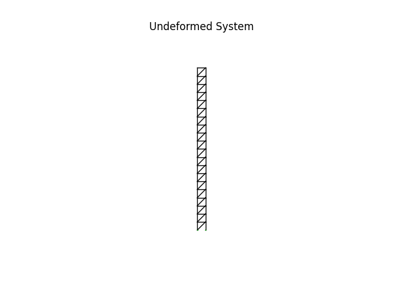
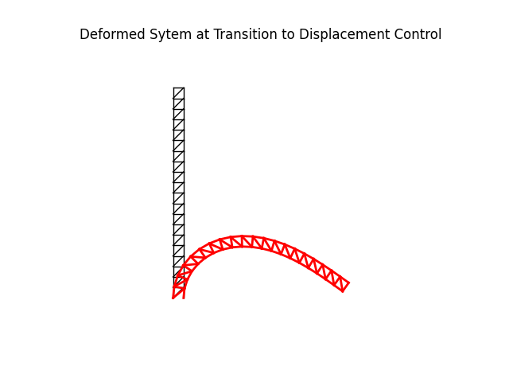
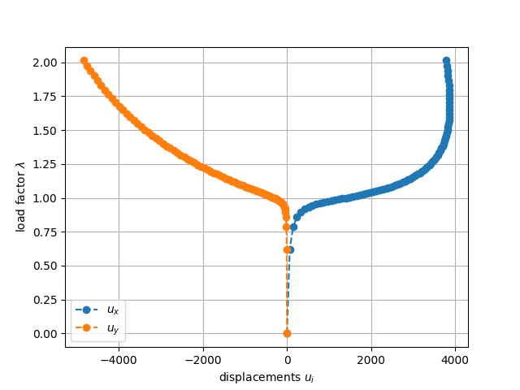

Note
Go to the end to download the full example code.
Post-buckling of a truss column using Arc-Length Control.
This is the same structure as in problem Post-buckling of a truss column using load Control. but it will be solved using arc-length-control.
Author: Peter Mackenzie-Helnwein
Setup
import numpy as np
import matplotlib.pyplot as plt
from femedu.examples import Example
from femedu.domain import System, Node
from femedu.elements.finite import Truss
from femedu.materials import FiberMaterial
from femedu.solver import NewtonRaphsonSolver
Create the example by subclassing the Example
class ExampleTruss09(Example):
def problem(self):
# units
mm = 1.
m = 1000. * mm
N = 1.0
kN = 1000. * N
MN = 1000. * kN
Pa = N / m**2
MPa = 1.e6 * Pa
GPa = 1000. * MPa
# mesh parameters
H = 5.00 * m
W = H / 20
Px = 0.05 * kN
#Ny = 11
Ny = 20
params_vert = dict(
E = 200 * GPa,
A = 10 * mm**2
)
params_diag = dict(
E = 200 * GPa,
A = 50 * mm**2
)
params_brace = dict(
E = 200 * GPa,
A = 50 * mm**2
)
EI = params_vert['E'] * params_vert['A'] * W**2 / 2
Py = EI * np.pi**2 / (2*H)**2
# initialize a system model
model = System()
model.setSolver(NewtonRaphsonSolver())
# create floor nodes
h = 0.0
nd0 = Node(0.0, h)
nd1 = Node( W, h)
nd_00 = nd0
nd_01 = nd1
model.addNode(nd0, nd1)
for layer in range(Ny):
h += H / Ny
nd_10 = Node(0.0, h)
nd_11 = Node( W, h)
model.addNode(nd_10, nd_11)
# create elements
model += Truss(nd_00, nd_10, FiberMaterial(params_vert))
model += Truss(nd_01, nd_11, FiberMaterial(params_vert))
model += Truss(nd_00, nd_11, FiberMaterial(params_diag))
model += Truss(nd_10, nd_11, FiberMaterial(params_brace))
# prep for the next level
nd_00 = nd_10
nd_01 = nd_11
# apply boundary conditions
nd0.fixDOF(['ux','uy'])
nd1.fixDOF(['ux','uy'])
# build reference load
nd_10.addLoad([-Py/2],['uy'])
nd_11.addLoad([-Py/2],['uy'])
nd_10.addLoad([ Px/2],['ux'])
nd_11.addLoad([ Px/2],['ux'])
# write out report
model.report()
# create plots
model.setLoadFactor(1.0) # needed to show the reference load
model.plot(factor=0., filename="truss08_undeformed.png", show_loads=1, show_bc=1, title="Undeformed System")
#
# performing the analysis
#
model.resetDisp()
model.setLoadFactor(0.0)
model.solve()
# set up data collection
load_list = [ 0.0 ]
data_list = [ nd_11.getDisp() ]
# initialize the arc-length parameters
model.initArcLength(load_increment=0.33, alpha=0.04, tolerance=1.0e-4)
# increments until the load level exceeds 2.0
#
# use a counter to prevent run-away analysis
maxSteps = 100
nSteps = 0
while True: # an endless loop
# mode by one reference arc-length
model.stepArcLength(max_iter=20, verbose=True)
# collect data
load_list.append(model.loadfactor)
data_list.append(nd_11.getDisp())
# emergency exit for run-away jobs
nSteps += 1
if nSteps > maxSteps:
print("Maximum number of load steps exceeded")
break
if model.loadfactor > 2.0:
print(f"Reached the target load level after {nSteps} steps")
break
# plot the deformed shape
model.plot(factor=1.0,
title="Deformed Sytem at Transition to Displacement Control",
filename="truss09_deformed_end_load_control.png",
show_loads=False, show_reactions=False)
#
# create a nice summary plot
#
levels = np.array(load_list)
data = np.array(data_list)
plt.figure()
plt.plot(data, levels, '--o')
plt.grid(True)
plt.xlabel('displacements $ u_i $')
plt.ylabel('load factor $ \\lambda $')
plt.legend(['$ u_x $','$ u_y $'])
plt.savefig("truss09_deformation_history.png")
plt.show()
Run the example by creating an instance of the problem and executing it by calling Example.run()
if __name__ == "__main__":
ex = ExampleTruss09()
ex.run()
- 
- 
- 
System Analysis Report
=======================
Nodes:
---------------------
Node_135:
x: [0.000 0.000]
fix: ['ux', 'uy']
u: None
Node_136:
x: [250.000 0.000]
fix: ['ux', 'uy']
u: None
Node_137:
x: [0.000 250.000]
u: None
Node_138:
x: [250.000 250.000]
u: None
Node_139:
x: [0.000 500.000]
u: None
Node_140:
x: [250.000 500.000]
u: None
Node_141:
x: [0.000 750.000]
u: None
Node_142:
x: [250.000 750.000]
u: None
Node_143:
x: [0.000 1000.000]
u: None
Node_144:
x: [250.000 1000.000]
u: None
Node_145:
x: [0.000 1250.000]
u: None
Node_146:
x: [250.000 1250.000]
u: None
Node_147:
x: [0.000 1500.000]
u: None
Node_148:
x: [250.000 1500.000]
u: None
Node_149:
x: [0.000 1750.000]
u: None
Node_150:
x: [250.000 1750.000]
u: None
Node_151:
x: [0.000 2000.000]
u: None
Node_152:
x: [250.000 2000.000]
u: None
Node_153:
x: [0.000 2250.000]
u: None
Node_154:
x: [250.000 2250.000]
u: None
Node_155:
x: [0.000 2500.000]
u: None
Node_156:
x: [250.000 2500.000]
u: None
Node_157:
x: [0.000 2750.000]
u: None
Node_158:
x: [250.000 2750.000]
u: None
Node_159:
x: [0.000 3000.000]
u: None
Node_160:
x: [250.000 3000.000]
u: None
Node_161:
x: [0.000 3250.000]
u: None
Node_162:
x: [250.000 3250.000]
u: None
Node_163:
x: [0.000 3500.000]
u: None
Node_164:
x: [250.000 3500.000]
u: None
Node_165:
x: [0.000 3750.000]
u: None
Node_166:
x: [250.000 3750.000]
u: None
Node_167:
x: [0.000 4000.000]
u: None
Node_168:
x: [250.000 4000.000]
u: None
Node_169:
x: [0.000 4250.000]
u: None
Node_170:
x: [250.000 4250.000]
u: None
Node_171:
x: [0.000 4500.000]
u: None
Node_172:
x: [250.000 4500.000]
u: None
Node_173:
x: [0.000 4750.000]
u: None
Node_174:
x: [250.000 4750.000]
u: None
Node_175:
x: [0.000 5000.000]
P: [25.000 -3084.251]
u: None
Node_176:
x: [250.000 5000.000]
P: [25.000 -3084.251]
u: None
Elements:
---------------------
Truss: Node_135 to Node_137:
material properties: FiberMaterial(Material)({'E': 200000.0, 'A': 10.0, 'nu': 0.0, 'fy': 1e+30}) strain:0.0 stress:{'xx': 0.0, 'yy': 0.0, 'zz': 0.0, 'xy': 0.0}
internal force: 0.0
Truss: Node_136 to Node_138:
material properties: FiberMaterial(Material)({'E': 200000.0, 'A': 10.0, 'nu': 0.0, 'fy': 1e+30}) strain:0.0 stress:{'xx': 0.0, 'yy': 0.0, 'zz': 0.0, 'xy': 0.0}
internal force: 0.0
Truss: Node_135 to Node_138:
material properties: FiberMaterial(Material)({'E': 200000.0, 'A': 50.0, 'nu': 0.0, 'fy': 1e+30}) strain:0.0 stress:{'xx': 0.0, 'yy': 0.0, 'zz': 0.0, 'xy': 0.0}
internal force: 0.0
Truss: Node_137 to Node_138:
material properties: FiberMaterial(Material)({'E': 200000.0, 'A': 50.0, 'nu': 0.0, 'fy': 1e+30}) strain:0.0 stress:{'xx': 0.0, 'yy': 0.0, 'zz': 0.0, 'xy': 0.0}
internal force: 0.0
Truss: Node_137 to Node_139:
material properties: FiberMaterial(Material)({'E': 200000.0, 'A': 10.0, 'nu': 0.0, 'fy': 1e+30}) strain:0.0 stress:{'xx': 0.0, 'yy': 0.0, 'zz': 0.0, 'xy': 0.0}
internal force: 0.0
Truss: Node_138 to Node_140:
material properties: FiberMaterial(Material)({'E': 200000.0, 'A': 10.0, 'nu': 0.0, 'fy': 1e+30}) strain:0.0 stress:{'xx': 0.0, 'yy': 0.0, 'zz': 0.0, 'xy': 0.0}
internal force: 0.0
Truss: Node_137 to Node_140:
material properties: FiberMaterial(Material)({'E': 200000.0, 'A': 50.0, 'nu': 0.0, 'fy': 1e+30}) strain:0.0 stress:{'xx': 0.0, 'yy': 0.0, 'zz': 0.0, 'xy': 0.0}
internal force: 0.0
Truss: Node_139 to Node_140:
material properties: FiberMaterial(Material)({'E': 200000.0, 'A': 50.0, 'nu': 0.0, 'fy': 1e+30}) strain:0.0 stress:{'xx': 0.0, 'yy': 0.0, 'zz': 0.0, 'xy': 0.0}
internal force: 0.0
Truss: Node_139 to Node_141:
material properties: FiberMaterial(Material)({'E': 200000.0, 'A': 10.0, 'nu': 0.0, 'fy': 1e+30}) strain:0.0 stress:{'xx': 0.0, 'yy': 0.0, 'zz': 0.0, 'xy': 0.0}
internal force: 0.0
Truss: Node_140 to Node_142:
material properties: FiberMaterial(Material)({'E': 200000.0, 'A': 10.0, 'nu': 0.0, 'fy': 1e+30}) strain:0.0 stress:{'xx': 0.0, 'yy': 0.0, 'zz': 0.0, 'xy': 0.0}
internal force: 0.0
Truss: Node_139 to Node_142:
material properties: FiberMaterial(Material)({'E': 200000.0, 'A': 50.0, 'nu': 0.0, 'fy': 1e+30}) strain:0.0 stress:{'xx': 0.0, 'yy': 0.0, 'zz': 0.0, 'xy': 0.0}
internal force: 0.0
Truss: Node_141 to Node_142:
material properties: FiberMaterial(Material)({'E': 200000.0, 'A': 50.0, 'nu': 0.0, 'fy': 1e+30}) strain:0.0 stress:{'xx': 0.0, 'yy': 0.0, 'zz': 0.0, 'xy': 0.0}
internal force: 0.0
Truss: Node_141 to Node_143:
material properties: FiberMaterial(Material)({'E': 200000.0, 'A': 10.0, 'nu': 0.0, 'fy': 1e+30}) strain:0.0 stress:{'xx': 0.0, 'yy': 0.0, 'zz': 0.0, 'xy': 0.0}
internal force: 0.0
Truss: Node_142 to Node_144:
material properties: FiberMaterial(Material)({'E': 200000.0, 'A': 10.0, 'nu': 0.0, 'fy': 1e+30}) strain:0.0 stress:{'xx': 0.0, 'yy': 0.0, 'zz': 0.0, 'xy': 0.0}
internal force: 0.0
Truss: Node_141 to Node_144:
material properties: FiberMaterial(Material)({'E': 200000.0, 'A': 50.0, 'nu': 0.0, 'fy': 1e+30}) strain:0.0 stress:{'xx': 0.0, 'yy': 0.0, 'zz': 0.0, 'xy': 0.0}
internal force: 0.0
Truss: Node_143 to Node_144:
material properties: FiberMaterial(Material)({'E': 200000.0, 'A': 50.0, 'nu': 0.0, 'fy': 1e+30}) strain:0.0 stress:{'xx': 0.0, 'yy': 0.0, 'zz': 0.0, 'xy': 0.0}
internal force: 0.0
Truss: Node_143 to Node_145:
material properties: FiberMaterial(Material)({'E': 200000.0, 'A': 10.0, 'nu': 0.0, 'fy': 1e+30}) strain:0.0 stress:{'xx': 0.0, 'yy': 0.0, 'zz': 0.0, 'xy': 0.0}
internal force: 0.0
Truss: Node_144 to Node_146:
material properties: FiberMaterial(Material)({'E': 200000.0, 'A': 10.0, 'nu': 0.0, 'fy': 1e+30}) strain:0.0 stress:{'xx': 0.0, 'yy': 0.0, 'zz': 0.0, 'xy': 0.0}
internal force: 0.0
Truss: Node_143 to Node_146:
material properties: FiberMaterial(Material)({'E': 200000.0, 'A': 50.0, 'nu': 0.0, 'fy': 1e+30}) strain:0.0 stress:{'xx': 0.0, 'yy': 0.0, 'zz': 0.0, 'xy': 0.0}
internal force: 0.0
Truss: Node_145 to Node_146:
material properties: FiberMaterial(Material)({'E': 200000.0, 'A': 50.0, 'nu': 0.0, 'fy': 1e+30}) strain:0.0 stress:{'xx': 0.0, 'yy': 0.0, 'zz': 0.0, 'xy': 0.0}
internal force: 0.0
Truss: Node_145 to Node_147:
material properties: FiberMaterial(Material)({'E': 200000.0, 'A': 10.0, 'nu': 0.0, 'fy': 1e+30}) strain:0.0 stress:{'xx': 0.0, 'yy': 0.0, 'zz': 0.0, 'xy': 0.0}
internal force: 0.0
Truss: Node_146 to Node_148:
material properties: FiberMaterial(Material)({'E': 200000.0, 'A': 10.0, 'nu': 0.0, 'fy': 1e+30}) strain:0.0 stress:{'xx': 0.0, 'yy': 0.0, 'zz': 0.0, 'xy': 0.0}
internal force: 0.0
Truss: Node_145 to Node_148:
material properties: FiberMaterial(Material)({'E': 200000.0, 'A': 50.0, 'nu': 0.0, 'fy': 1e+30}) strain:0.0 stress:{'xx': 0.0, 'yy': 0.0, 'zz': 0.0, 'xy': 0.0}
internal force: 0.0
Truss: Node_147 to Node_148:
material properties: FiberMaterial(Material)({'E': 200000.0, 'A': 50.0, 'nu': 0.0, 'fy': 1e+30}) strain:0.0 stress:{'xx': 0.0, 'yy': 0.0, 'zz': 0.0, 'xy': 0.0}
internal force: 0.0
Truss: Node_147 to Node_149:
material properties: FiberMaterial(Material)({'E': 200000.0, 'A': 10.0, 'nu': 0.0, 'fy': 1e+30}) strain:0.0 stress:{'xx': 0.0, 'yy': 0.0, 'zz': 0.0, 'xy': 0.0}
internal force: 0.0
Truss: Node_148 to Node_150:
material properties: FiberMaterial(Material)({'E': 200000.0, 'A': 10.0, 'nu': 0.0, 'fy': 1e+30}) strain:0.0 stress:{'xx': 0.0, 'yy': 0.0, 'zz': 0.0, 'xy': 0.0}
internal force: 0.0
Truss: Node_147 to Node_150:
material properties: FiberMaterial(Material)({'E': 200000.0, 'A': 50.0, 'nu': 0.0, 'fy': 1e+30}) strain:0.0 stress:{'xx': 0.0, 'yy': 0.0, 'zz': 0.0, 'xy': 0.0}
internal force: 0.0
Truss: Node_149 to Node_150:
material properties: FiberMaterial(Material)({'E': 200000.0, 'A': 50.0, 'nu': 0.0, 'fy': 1e+30}) strain:0.0 stress:{'xx': 0.0, 'yy': 0.0, 'zz': 0.0, 'xy': 0.0}
internal force: 0.0
Truss: Node_149 to Node_151:
material properties: FiberMaterial(Material)({'E': 200000.0, 'A': 10.0, 'nu': 0.0, 'fy': 1e+30}) strain:0.0 stress:{'xx': 0.0, 'yy': 0.0, 'zz': 0.0, 'xy': 0.0}
internal force: 0.0
Truss: Node_150 to Node_152:
material properties: FiberMaterial(Material)({'E': 200000.0, 'A': 10.0, 'nu': 0.0, 'fy': 1e+30}) strain:0.0 stress:{'xx': 0.0, 'yy': 0.0, 'zz': 0.0, 'xy': 0.0}
internal force: 0.0
Truss: Node_149 to Node_152:
material properties: FiberMaterial(Material)({'E': 200000.0, 'A': 50.0, 'nu': 0.0, 'fy': 1e+30}) strain:0.0 stress:{'xx': 0.0, 'yy': 0.0, 'zz': 0.0, 'xy': 0.0}
internal force: 0.0
Truss: Node_151 to Node_152:
material properties: FiberMaterial(Material)({'E': 200000.0, 'A': 50.0, 'nu': 0.0, 'fy': 1e+30}) strain:0.0 stress:{'xx': 0.0, 'yy': 0.0, 'zz': 0.0, 'xy': 0.0}
internal force: 0.0
Truss: Node_151 to Node_153:
material properties: FiberMaterial(Material)({'E': 200000.0, 'A': 10.0, 'nu': 0.0, 'fy': 1e+30}) strain:0.0 stress:{'xx': 0.0, 'yy': 0.0, 'zz': 0.0, 'xy': 0.0}
internal force: 0.0
Truss: Node_152 to Node_154:
material properties: FiberMaterial(Material)({'E': 200000.0, 'A': 10.0, 'nu': 0.0, 'fy': 1e+30}) strain:0.0 stress:{'xx': 0.0, 'yy': 0.0, 'zz': 0.0, 'xy': 0.0}
internal force: 0.0
Truss: Node_151 to Node_154:
material properties: FiberMaterial(Material)({'E': 200000.0, 'A': 50.0, 'nu': 0.0, 'fy': 1e+30}) strain:0.0 stress:{'xx': 0.0, 'yy': 0.0, 'zz': 0.0, 'xy': 0.0}
internal force: 0.0
Truss: Node_153 to Node_154:
material properties: FiberMaterial(Material)({'E': 200000.0, 'A': 50.0, 'nu': 0.0, 'fy': 1e+30}) strain:0.0 stress:{'xx': 0.0, 'yy': 0.0, 'zz': 0.0, 'xy': 0.0}
internal force: 0.0
Truss: Node_153 to Node_155:
material properties: FiberMaterial(Material)({'E': 200000.0, 'A': 10.0, 'nu': 0.0, 'fy': 1e+30}) strain:0.0 stress:{'xx': 0.0, 'yy': 0.0, 'zz': 0.0, 'xy': 0.0}
internal force: 0.0
Truss: Node_154 to Node_156:
material properties: FiberMaterial(Material)({'E': 200000.0, 'A': 10.0, 'nu': 0.0, 'fy': 1e+30}) strain:0.0 stress:{'xx': 0.0, 'yy': 0.0, 'zz': 0.0, 'xy': 0.0}
internal force: 0.0
Truss: Node_153 to Node_156:
material properties: FiberMaterial(Material)({'E': 200000.0, 'A': 50.0, 'nu': 0.0, 'fy': 1e+30}) strain:0.0 stress:{'xx': 0.0, 'yy': 0.0, 'zz': 0.0, 'xy': 0.0}
internal force: 0.0
Truss: Node_155 to Node_156:
material properties: FiberMaterial(Material)({'E': 200000.0, 'A': 50.0, 'nu': 0.0, 'fy': 1e+30}) strain:0.0 stress:{'xx': 0.0, 'yy': 0.0, 'zz': 0.0, 'xy': 0.0}
internal force: 0.0
Truss: Node_155 to Node_157:
material properties: FiberMaterial(Material)({'E': 200000.0, 'A': 10.0, 'nu': 0.0, 'fy': 1e+30}) strain:0.0 stress:{'xx': 0.0, 'yy': 0.0, 'zz': 0.0, 'xy': 0.0}
internal force: 0.0
Truss: Node_156 to Node_158:
material properties: FiberMaterial(Material)({'E': 200000.0, 'A': 10.0, 'nu': 0.0, 'fy': 1e+30}) strain:0.0 stress:{'xx': 0.0, 'yy': 0.0, 'zz': 0.0, 'xy': 0.0}
internal force: 0.0
Truss: Node_155 to Node_158:
material properties: FiberMaterial(Material)({'E': 200000.0, 'A': 50.0, 'nu': 0.0, 'fy': 1e+30}) strain:0.0 stress:{'xx': 0.0, 'yy': 0.0, 'zz': 0.0, 'xy': 0.0}
internal force: 0.0
Truss: Node_157 to Node_158:
material properties: FiberMaterial(Material)({'E': 200000.0, 'A': 50.0, 'nu': 0.0, 'fy': 1e+30}) strain:0.0 stress:{'xx': 0.0, 'yy': 0.0, 'zz': 0.0, 'xy': 0.0}
internal force: 0.0
Truss: Node_157 to Node_159:
material properties: FiberMaterial(Material)({'E': 200000.0, 'A': 10.0, 'nu': 0.0, 'fy': 1e+30}) strain:0.0 stress:{'xx': 0.0, 'yy': 0.0, 'zz': 0.0, 'xy': 0.0}
internal force: 0.0
Truss: Node_158 to Node_160:
material properties: FiberMaterial(Material)({'E': 200000.0, 'A': 10.0, 'nu': 0.0, 'fy': 1e+30}) strain:0.0 stress:{'xx': 0.0, 'yy': 0.0, 'zz': 0.0, 'xy': 0.0}
internal force: 0.0
Truss: Node_157 to Node_160:
material properties: FiberMaterial(Material)({'E': 200000.0, 'A': 50.0, 'nu': 0.0, 'fy': 1e+30}) strain:0.0 stress:{'xx': 0.0, 'yy': 0.0, 'zz': 0.0, 'xy': 0.0}
internal force: 0.0
Truss: Node_159 to Node_160:
material properties: FiberMaterial(Material)({'E': 200000.0, 'A': 50.0, 'nu': 0.0, 'fy': 1e+30}) strain:0.0 stress:{'xx': 0.0, 'yy': 0.0, 'zz': 0.0, 'xy': 0.0}
internal force: 0.0
Truss: Node_159 to Node_161:
material properties: FiberMaterial(Material)({'E': 200000.0, 'A': 10.0, 'nu': 0.0, 'fy': 1e+30}) strain:0.0 stress:{'xx': 0.0, 'yy': 0.0, 'zz': 0.0, 'xy': 0.0}
internal force: 0.0
Truss: Node_160 to Node_162:
material properties: FiberMaterial(Material)({'E': 200000.0, 'A': 10.0, 'nu': 0.0, 'fy': 1e+30}) strain:0.0 stress:{'xx': 0.0, 'yy': 0.0, 'zz': 0.0, 'xy': 0.0}
internal force: 0.0
Truss: Node_159 to Node_162:
material properties: FiberMaterial(Material)({'E': 200000.0, 'A': 50.0, 'nu': 0.0, 'fy': 1e+30}) strain:0.0 stress:{'xx': 0.0, 'yy': 0.0, 'zz': 0.0, 'xy': 0.0}
internal force: 0.0
Truss: Node_161 to Node_162:
material properties: FiberMaterial(Material)({'E': 200000.0, 'A': 50.0, 'nu': 0.0, 'fy': 1e+30}) strain:0.0 stress:{'xx': 0.0, 'yy': 0.0, 'zz': 0.0, 'xy': 0.0}
internal force: 0.0
Truss: Node_161 to Node_163:
material properties: FiberMaterial(Material)({'E': 200000.0, 'A': 10.0, 'nu': 0.0, 'fy': 1e+30}) strain:0.0 stress:{'xx': 0.0, 'yy': 0.0, 'zz': 0.0, 'xy': 0.0}
internal force: 0.0
Truss: Node_162 to Node_164:
material properties: FiberMaterial(Material)({'E': 200000.0, 'A': 10.0, 'nu': 0.0, 'fy': 1e+30}) strain:0.0 stress:{'xx': 0.0, 'yy': 0.0, 'zz': 0.0, 'xy': 0.0}
internal force: 0.0
Truss: Node_161 to Node_164:
material properties: FiberMaterial(Material)({'E': 200000.0, 'A': 50.0, 'nu': 0.0, 'fy': 1e+30}) strain:0.0 stress:{'xx': 0.0, 'yy': 0.0, 'zz': 0.0, 'xy': 0.0}
internal force: 0.0
Truss: Node_163 to Node_164:
material properties: FiberMaterial(Material)({'E': 200000.0, 'A': 50.0, 'nu': 0.0, 'fy': 1e+30}) strain:0.0 stress:{'xx': 0.0, 'yy': 0.0, 'zz': 0.0, 'xy': 0.0}
internal force: 0.0
Truss: Node_163 to Node_165:
material properties: FiberMaterial(Material)({'E': 200000.0, 'A': 10.0, 'nu': 0.0, 'fy': 1e+30}) strain:0.0 stress:{'xx': 0.0, 'yy': 0.0, 'zz': 0.0, 'xy': 0.0}
internal force: 0.0
Truss: Node_164 to Node_166:
material properties: FiberMaterial(Material)({'E': 200000.0, 'A': 10.0, 'nu': 0.0, 'fy': 1e+30}) strain:0.0 stress:{'xx': 0.0, 'yy': 0.0, 'zz': 0.0, 'xy': 0.0}
internal force: 0.0
Truss: Node_163 to Node_166:
material properties: FiberMaterial(Material)({'E': 200000.0, 'A': 50.0, 'nu': 0.0, 'fy': 1e+30}) strain:0.0 stress:{'xx': 0.0, 'yy': 0.0, 'zz': 0.0, 'xy': 0.0}
internal force: 0.0
Truss: Node_165 to Node_166:
material properties: FiberMaterial(Material)({'E': 200000.0, 'A': 50.0, 'nu': 0.0, 'fy': 1e+30}) strain:0.0 stress:{'xx': 0.0, 'yy': 0.0, 'zz': 0.0, 'xy': 0.0}
internal force: 0.0
Truss: Node_165 to Node_167:
material properties: FiberMaterial(Material)({'E': 200000.0, 'A': 10.0, 'nu': 0.0, 'fy': 1e+30}) strain:0.0 stress:{'xx': 0.0, 'yy': 0.0, 'zz': 0.0, 'xy': 0.0}
internal force: 0.0
Truss: Node_166 to Node_168:
material properties: FiberMaterial(Material)({'E': 200000.0, 'A': 10.0, 'nu': 0.0, 'fy': 1e+30}) strain:0.0 stress:{'xx': 0.0, 'yy': 0.0, 'zz': 0.0, 'xy': 0.0}
internal force: 0.0
Truss: Node_165 to Node_168:
material properties: FiberMaterial(Material)({'E': 200000.0, 'A': 50.0, 'nu': 0.0, 'fy': 1e+30}) strain:0.0 stress:{'xx': 0.0, 'yy': 0.0, 'zz': 0.0, 'xy': 0.0}
internal force: 0.0
Truss: Node_167 to Node_168:
material properties: FiberMaterial(Material)({'E': 200000.0, 'A': 50.0, 'nu': 0.0, 'fy': 1e+30}) strain:0.0 stress:{'xx': 0.0, 'yy': 0.0, 'zz': 0.0, 'xy': 0.0}
internal force: 0.0
Truss: Node_167 to Node_169:
material properties: FiberMaterial(Material)({'E': 200000.0, 'A': 10.0, 'nu': 0.0, 'fy': 1e+30}) strain:0.0 stress:{'xx': 0.0, 'yy': 0.0, 'zz': 0.0, 'xy': 0.0}
internal force: 0.0
Truss: Node_168 to Node_170:
material properties: FiberMaterial(Material)({'E': 200000.0, 'A': 10.0, 'nu': 0.0, 'fy': 1e+30}) strain:0.0 stress:{'xx': 0.0, 'yy': 0.0, 'zz': 0.0, 'xy': 0.0}
internal force: 0.0
Truss: Node_167 to Node_170:
material properties: FiberMaterial(Material)({'E': 200000.0, 'A': 50.0, 'nu': 0.0, 'fy': 1e+30}) strain:0.0 stress:{'xx': 0.0, 'yy': 0.0, 'zz': 0.0, 'xy': 0.0}
internal force: 0.0
Truss: Node_169 to Node_170:
material properties: FiberMaterial(Material)({'E': 200000.0, 'A': 50.0, 'nu': 0.0, 'fy': 1e+30}) strain:0.0 stress:{'xx': 0.0, 'yy': 0.0, 'zz': 0.0, 'xy': 0.0}
internal force: 0.0
Truss: Node_169 to Node_171:
material properties: FiberMaterial(Material)({'E': 200000.0, 'A': 10.0, 'nu': 0.0, 'fy': 1e+30}) strain:0.0 stress:{'xx': 0.0, 'yy': 0.0, 'zz': 0.0, 'xy': 0.0}
internal force: 0.0
Truss: Node_170 to Node_172:
material properties: FiberMaterial(Material)({'E': 200000.0, 'A': 10.0, 'nu': 0.0, 'fy': 1e+30}) strain:0.0 stress:{'xx': 0.0, 'yy': 0.0, 'zz': 0.0, 'xy': 0.0}
internal force: 0.0
Truss: Node_169 to Node_172:
material properties: FiberMaterial(Material)({'E': 200000.0, 'A': 50.0, 'nu': 0.0, 'fy': 1e+30}) strain:0.0 stress:{'xx': 0.0, 'yy': 0.0, 'zz': 0.0, 'xy': 0.0}
internal force: 0.0
Truss: Node_171 to Node_172:
material properties: FiberMaterial(Material)({'E': 200000.0, 'A': 50.0, 'nu': 0.0, 'fy': 1e+30}) strain:0.0 stress:{'xx': 0.0, 'yy': 0.0, 'zz': 0.0, 'xy': 0.0}
internal force: 0.0
Truss: Node_171 to Node_173:
material properties: FiberMaterial(Material)({'E': 200000.0, 'A': 10.0, 'nu': 0.0, 'fy': 1e+30}) strain:0.0 stress:{'xx': 0.0, 'yy': 0.0, 'zz': 0.0, 'xy': 0.0}
internal force: 0.0
Truss: Node_172 to Node_174:
material properties: FiberMaterial(Material)({'E': 200000.0, 'A': 10.0, 'nu': 0.0, 'fy': 1e+30}) strain:0.0 stress:{'xx': 0.0, 'yy': 0.0, 'zz': 0.0, 'xy': 0.0}
internal force: 0.0
Truss: Node_171 to Node_174:
material properties: FiberMaterial(Material)({'E': 200000.0, 'A': 50.0, 'nu': 0.0, 'fy': 1e+30}) strain:0.0 stress:{'xx': 0.0, 'yy': 0.0, 'zz': 0.0, 'xy': 0.0}
internal force: 0.0
Truss: Node_173 to Node_174:
material properties: FiberMaterial(Material)({'E': 200000.0, 'A': 50.0, 'nu': 0.0, 'fy': 1e+30}) strain:0.0 stress:{'xx': 0.0, 'yy': 0.0, 'zz': 0.0, 'xy': 0.0}
internal force: 0.0
Truss: Node_173 to Node_175:
material properties: FiberMaterial(Material)({'E': 200000.0, 'A': 10.0, 'nu': 0.0, 'fy': 1e+30}) strain:0.0 stress:{'xx': 0.0, 'yy': 0.0, 'zz': 0.0, 'xy': 0.0}
internal force: 0.0
Truss: Node_174 to Node_176:
material properties: FiberMaterial(Material)({'E': 200000.0, 'A': 10.0, 'nu': 0.0, 'fy': 1e+30}) strain:0.0 stress:{'xx': 0.0, 'yy': 0.0, 'zz': 0.0, 'xy': 0.0}
internal force: 0.0
Truss: Node_173 to Node_176:
material properties: FiberMaterial(Material)({'E': 200000.0, 'A': 50.0, 'nu': 0.0, 'fy': 1e+30}) strain:0.0 stress:{'xx': 0.0, 'yy': 0.0, 'zz': 0.0, 'xy': 0.0}
internal force: 0.0
Truss: Node_175 to Node_176:
material properties: FiberMaterial(Material)({'E': 200000.0, 'A': 50.0, 'nu': 0.0, 'fy': 1e+30}) strain:0.0 stress:{'xx': 0.0, 'yy': 0.0, 'zz': 0.0, 'xy': 0.0}
internal force: 0.0
+
+
+
Last converged state stored at lam=0.33
norm of the out-of-balance force: 8.2920e+04 with g= 8.2879e+04
norm of the out-of-balance force: 1.6569e+06 with g= -1.6521e+06
norm of the out-of-balance force: 5.1266e+05 with g= -5.1266e+05
norm of the out-of-balance force: 1.4611e+05 with g= -1.3796e+05
norm of the out-of-balance force: 2.5723e+04 with g= -2.5721e+04
norm of the out-of-balance force: 9.5233e+03 with g= -9.0877e+03
norm of the out-of-balance force: 3.2146e+02 with g= -3.0907e+02
norm of the out-of-balance force: 1.6638e+01 with g= -1.5828e+01
norm of the out-of-balance force: 3.5671e-03 with g= -3.3529e-03
norm of the out-of-balance force: 5.5540e-08 with g= -9.2359e-10
+
Last converged state stored at lam=0.6227422697123645
norm of the out-of-balance force: 6.6676e+04 with g= 6.5221e+04
norm of the out-of-balance force: 2.0449e+05 with g= -2.0391e+05
norm of the out-of-balance force: 5.5408e+04 with g= -5.5408e+04
norm of the out-of-balance force: 6.1144e+03 with g= -5.7866e+03
norm of the out-of-balance force: 9.2764e+01 with g= -9.0033e+01
norm of the out-of-balance force: 1.1474e+00 with g= -1.1337e+00
norm of the out-of-balance force: 1.0110e-05 with g= -9.6344e-06
+
Last converged state stored at lam=0.787647858831627
norm of the out-of-balance force: 4.9724e+04 with g= 2.0696e+04
norm of the out-of-balance force: 2.1897e+04 with g= -2.1891e+04
norm of the out-of-balance force: 6.3454e+03 with g= -6.3454e+03
norm of the out-of-balance force: 1.1488e+02 with g= -1.0849e+02
norm of the out-of-balance force: 3.5700e-02 with g= -3.3758e-02
norm of the out-of-balance force: 1.2329e-07 with g= -1.0866e-07
+
Last converged state stored at lam=0.8582211678855424
norm of the out-of-balance force: 5.8126e+04 with g= 3.7905e+03
norm of the out-of-balance force: 2.1377e+03 with g= -2.1375e+03
norm of the out-of-balance force: 1.8609e+02 with g= -1.8609e+02
norm of the out-of-balance force: 1.0489e-01 with g= -9.8989e-02
norm of the out-of-balance force: 4.9708e-08 with g= -2.8062e-08
+
Last converged state stored at lam=0.8947444636355311
norm of the out-of-balance force: 6.0363e+04 with g= 1.0152e+03
norm of the out-of-balance force: 5.6786e+02 with g= -5.6741e+02
norm of the out-of-balance force: 1.2622e+01 with g= -1.2621e+01
norm of the out-of-balance force: 4.8446e-04 with g= -4.5715e-04
norm of the out-of-balance force: 5.5756e-08 with g= 7.2760e-12
+
Last converged state stored at lam=0.9171595588454392
norm of the out-of-balance force: 6.0976e+04 with g= 3.8238e+02
norm of the out-of-balance force: 2.5692e+02 with g= -2.5596e+02
norm of the out-of-balance force: 2.0406e+00 with g= -2.0405e+00
norm of the out-of-balance force: 1.2702e-05 with g= -1.1993e-05
+
Last converged state stored at lam=0.9325833500342546
norm of the out-of-balance force: 6.1208e+04 with g= 1.8105e+02
norm of the out-of-balance force: 1.5454e+02 with g= -1.5294e+02
norm of the out-of-balance force: 6.0771e-01 with g= -6.0763e-01
norm of the out-of-balance force: 1.1339e-06 with g= -1.0685e-06
+
Last converged state stored at lam=0.9441053338225337
norm of the out-of-balance force: 6.1318e+04 with g= 1.0104e+02
norm of the out-of-balance force: 1.1112e+02 with g= -1.0887e+02
norm of the out-of-balance force: 2.7131e-01 with g= -2.7126e-01
norm of the out-of-balance force: 2.3165e-07 with g= -2.1401e-07
+
Last converged state stored at lam=0.9532736531530919
norm of the out-of-balance force: 6.1380e+04 with g= 6.3973e+01
norm of the out-of-balance force: 8.9769e+01 with g= -8.6957e+01
norm of the out-of-balance force: 1.5665e-01 with g= -1.5661e-01
norm of the out-of-balance force: 8.4460e-08 with g= -7.1683e-08
+
Last converged state stored at lam=0.9609482768676192
norm of the out-of-balance force: 6.1419e+04 with g= 4.4826e+01
norm of the out-of-balance force: 7.8195e+01 with g= -7.4943e+01
norm of the out-of-balance force: 1.0626e-01 with g= -1.0622e-01
norm of the out-of-balance force: 7.5056e-08 with g= -3.3098e-08
+
Last converged state stored at lam=0.967645074742044
norm of the out-of-balance force: 6.1446e+04 with g= 3.4131e+01
norm of the out-of-balance force: 7.1504e+01 with g= -6.7928e+01
norm of the out-of-balance force: 7.9850e-02 with g= -7.9819e-02
norm of the out-of-balance force: 5.4054e-08 with g= -1.8768e-08
+
Last converged state stored at lam=0.9736925116512775
norm of the out-of-balance force: 6.1467e+04 with g= 2.7833e+01
norm of the out-of-balance force: 6.7488e+01 with g= -6.3683e+01
norm of the out-of-balance force: 6.4196e-02 with g= -6.4164e-02
norm of the out-of-balance force: 4.4052e-08 with g= -1.2109e-08
+
Last converged state stored at lam=0.9793099729067144
norm of the out-of-balance force: 6.1484e+04 with g= 2.4016e+01
norm of the out-of-balance force: 6.5055e+01 with g= -6.1097e+01
norm of the out-of-balance force: 5.4067e-02 with g= -5.4034e-02
norm of the out-of-balance force: 4.8265e-08 with g= -8.6566e-09
+
Last converged state stored at lam=0.9846498954569803
norm of the out-of-balance force: 6.1498e+04 with g= 2.1701e+01
norm of the out-of-balance force: 6.3628e+01 with g= -5.9573e+01
norm of the out-of-balance force: 4.7092e-02 with g= -4.7057e-02
norm of the out-of-balance force: 4.6065e-08 with g= -6.6375e-09
+
Last converged state stored at lam=0.9898218124584849
norm of the out-of-balance force: 6.1511e+04 with g= 2.0357e+01
norm of the out-of-balance force: 6.2879e+01 with g= -5.8772e+01
norm of the out-of-balance force: 4.2071e-02 with g= -4.2033e-02
norm of the out-of-balance force: 4.1005e-08 with g= -5.2660e-09
+
Last converged state stored at lam=0.9949067620146373
norm of the out-of-balance force: 6.1523e+04 with g= 1.9678e+01
norm of the out-of-balance force: 6.2617e+01 with g= -5.8492e+01
norm of the out-of-balance force: 3.8345e-02 with g= -3.8302e-02
norm of the out-of-balance force: 4.5872e-08 with g= -4.4147e-09
+
Last converged state stored at lam=0.9999662825781825
norm of the out-of-balance force: 6.1534e+04 with g= 1.9482e+01
norm of the out-of-balance force: 6.2725e+01 with g= -5.8608e+01
norm of the out-of-balance force: 3.5524e-02 with g= -3.5475e-02
norm of the out-of-balance force: 4.6537e-08 with g= -3.7835e-09
+
Last converged state stored at lam=1.0050482281891235
norm of the out-of-balance force: 6.1545e+04 with g= 1.9655e+01
norm of the out-of-balance force: 6.3129e+01 with g= -5.9040e+01
norm of the out-of-balance force: 3.3366e-02 with g= -3.3310e-02
norm of the out-of-balance force: 4.6562e-08 with g= -3.3069e-09
+
Last converged state stored at lam=1.010190642795217
norm of the out-of-balance force: 6.1556e+04 with g= 2.0126e+01
norm of the out-of-balance force: 6.3781e+01 with g= -5.9738e+01
norm of the out-of-balance force: 3.1715e-02 with g= -3.1650e-02
norm of the out-of-balance force: 5.3767e-08 with g= -3.0559e-09
+
Last converged state stored at lam=1.015424410289963
norm of the out-of-balance force: 6.1566e+04 with g= 2.0847e+01
norm of the out-of-balance force: 6.4651e+01 with g= -6.0668e+01
norm of the out-of-balance force: 3.0466e-02 with g= -3.0389e-02
norm of the out-of-balance force: 4.9668e-08 with g= -2.8158e-09
+
Last converged state stored at lam=1.0207751097708821
norm of the out-of-balance force: 6.1577e+04 with g= 2.1789e+01
norm of the out-of-balance force: 6.5720e+01 with g= -6.1807e+01
norm of the out-of-balance force: 2.9545e-02 with g= -2.9455e-02
norm of the out-of-balance force: 3.9835e-08 with g= -2.6394e-09
+
Last converged state stored at lam=1.0262643416213055
norm of the out-of-balance force: 6.1587e+04 with g= 2.2932e+01
norm of the out-of-balance force: 6.6975e+01 with g= -6.3142e+01
norm of the out-of-balance force: 2.8903e-02 with g= -2.8796e-02
norm of the out-of-balance force: 4.8596e-08 with g= -2.5393e-09
+
Last converged state stored at lam=1.031910693271557
norm of the out-of-balance force: 6.1597e+04 with g= 2.4264e+01
norm of the out-of-balance force: 6.8411e+01 with g= -6.4665e+01
norm of the out-of-balance force: 2.8504e-02 with g= -2.8376e-02
norm of the out-of-balance force: 4.7277e-08 with g= -2.5429e-09
+
Last converged state stored at lam=1.0377304546652366
norm of the out-of-balance force: 6.1606e+04 with g= 2.5777e+01
norm of the out-of-balance force: 7.0023e+01 with g= -6.6371e+01
norm of the out-of-balance force: 2.8325e-02 with g= -2.8171e-02
norm of the out-of-balance force: 6.1265e-08 with g= -2.4484e-09
+
Last converged state stored at lam=1.0437381567232127
norm of the out-of-balance force: 6.1615e+04 with g= 2.7468e+01
norm of the out-of-balance force: 7.1813e+01 with g= -6.8259e+01
norm of the out-of-balance force: 2.8350e-02 with g= -2.8165e-02
norm of the out-of-balance force: 4.4501e-08 with g= -2.4484e-09
+
Last converged state stored at lam=1.049946982610345
norm of the out-of-balance force: 6.1624e+04 with g= 2.9338e+01
norm of the out-of-balance force: 7.3783e+01 with g= -7.0332e+01
norm of the out-of-balance force: 2.8568e-02 with g= -2.8346e-02
norm of the out-of-balance force: 5.4980e-08 with g= -2.5993e-09
+
Last converged state stored at lam=1.0563690862662625
norm of the out-of-balance force: 6.1633e+04 with g= 3.1389e+01
norm of the out-of-balance force: 7.5938e+01 with g= -7.2592e+01
norm of the out-of-balance force: 2.8975e-02 with g= -2.8709e-02
norm of the out-of-balance force: 4.3615e-08 with g= -2.6612e-09
+
Last converged state stored at lam=1.0630158424409777
norm of the out-of-balance force: 6.1641e+04 with g= 3.3623e+01
norm of the out-of-balance force: 7.8283e+01 with g= -7.5045e+01
norm of the out-of-balance force: 2.9572e-02 with g= -2.9252e-02
norm of the out-of-balance force: 4.8932e-08 with g= -2.5830e-09
+
Last converged state stored at lam=1.0698980455464862
norm of the out-of-balance force: 6.1649e+04 with g= 3.6047e+01
norm of the out-of-balance force: 8.0826e+01 with g= -7.7698e+01
norm of the out-of-balance force: 3.0362e-02 with g= -2.9979e-02
norm of the out-of-balance force: 6.0872e-08 with g= -2.8176e-09
+
Last converged state stored at lam=1.0770260698602345
norm of the out-of-balance force: 6.1655e+04 with g= 3.8668e+01
norm of the out-of-balance force: 8.3575e+01 with g= -8.0558e+01
norm of the out-of-balance force: 3.1352e-02 with g= -3.0895e-02
norm of the out-of-balance force: 5.9064e-08 with g= -2.9158e-09
+
Last converged state stored at lam=1.0844100002764903
norm of the out-of-balance force: 6.1661e+04 with g= 4.1495e+01
norm of the out-of-balance force: 8.6542e+01 with g= -8.3636e+01
norm of the out-of-balance force: 3.2554e-02 with g= -3.2008e-02
norm of the out-of-balance force: 5.8583e-08 with g= -3.2269e-09
+
Last converged state stored at lam=1.092059740433294
norm of the out-of-balance force: 6.1667e+04 with g= 4.4536e+01
norm of the out-of-balance force: 8.9737e+01 with g= -8.6942e+01
norm of the out-of-balance force: 3.3980e-02 with g= -3.3332e-02
norm of the out-of-balance force: 7.7476e-08 with g= -3.5488e-09
+
Last converged state stored at lam=1.0999851033420847
norm of the out-of-balance force: 6.1671e+04 with g= 4.7803e+01
norm of the out-of-balance force: 9.3173e+01 with g= -9.0489e+01
norm of the out-of-balance force: 3.5648e-02 with g= -3.4880e-02
norm of the out-of-balance force: 4.4704e-08 with g= -3.7453e-09
+
Last converged state stored at lam=1.1081958884114473
norm of the out-of-balance force: 6.1674e+04 with g= 5.1308e+01
norm of the out-of-balance force: 9.6864e+01 with g= -9.4290e+01
norm of the out-of-balance force: 3.7580e-02 with g= -3.6673e-02
norm of the out-of-balance force: 6.1124e-08 with g= -4.1873e-09
+
Last converged state stored at lam=1.1167019478489053
norm of the out-of-balance force: 6.1676e+04 with g= 5.5065e+01
norm of the out-of-balance force: 1.0082e+02 with g= -9.8359e+01
norm of the out-of-balance force: 3.9799e-02 with g= -3.8732e-02
norm of the out-of-balance force: 4.6867e-08 with g= -4.6803e-09
+
Last converged state stored at lam=1.1255132447515372
norm of the out-of-balance force: 6.1676e+04 with g= 5.9088e+01
norm of the out-of-balance force: 1.0507e+02 with g= -1.0271e+02
norm of the out-of-balance force: 4.2335e-02 with g= -4.1084e-02
norm of the out-of-balance force: 6.0592e-08 with g= -5.1714e-09
+
Last converged state stored at lam=1.134639904691934
norm of the out-of-balance force: 6.1675e+04 with g= 6.3393e+01
norm of the out-of-balance force: 1.0962e+02 with g= -1.0737e+02
norm of the out-of-balance force: 4.5221e-02 with g= -4.3758e-02
norm of the out-of-balance force: 6.6086e-08 with g= -5.8644e-09
+
Last converged state stored at lam=1.1440922622254606
norm of the out-of-balance force: 6.1672e+04 with g= 6.7998e+01
norm of the out-of-balance force: 1.1450e+02 with g= -1.1235e+02
norm of the out-of-balance force: 4.8497e-02 with g= -4.6791e-02
norm of the out-of-balance force: 7.7302e-08 with g= -6.6339e-09
+
Last converged state stored at lam=1.1538809034547999
norm of the out-of-balance force: 6.1668e+04 with g= 7.2923e+01
norm of the out-of-balance force: 1.1972e+02 with g= -1.1767e+02
norm of the out-of-balance force: 5.2205e-02 with g= -5.0224e-02
norm of the out-of-balance force: 7.4820e-08 with g= -7.6761e-09
+
Last converged state stored at lam=1.164016705565621
norm of the out-of-balance force: 6.1661e+04 with g= 7.8187e+01
norm of the out-of-balance force: 1.2531e+02 with g= -1.2336e+02
norm of the out-of-balance force: 5.6397e-02 with g= -5.4102e-02
norm of the out-of-balance force: 6.9010e-08 with g= -8.7875e-09
+
Last converged state stored at lam=1.1745108740755632
norm of the out-of-balance force: 6.1652e+04 with g= 8.3814e+01
norm of the out-of-balance force: 1.3129e+02 with g= -1.2944e+02
norm of the out-of-balance force: 6.1130e-02 with g= -5.8479e-02
norm of the out-of-balance force: 5.9241e-08 with g= -1.0205e-08
+
Last converged state stored at lam=1.1853749784055951
norm of the out-of-balance force: 6.1641e+04 with g= 8.9827e+01
norm of the out-of-balance force: 1.3769e+02 with g= -1.3593e+02
norm of the out-of-balance force: 6.6472e-02 with g= -6.3418e-02
norm of the out-of-balance force: 9.6528e-08 with g= -1.2116e-08
+
Last converged state stored at lam=1.1966209862786765
norm of the out-of-balance force: 6.1627e+04 with g= 9.6253e+01
norm of the out-of-balance force: 1.4454e+02 with g= -1.4287e+02
norm of the out-of-balance force: 7.2497e-02 with g= -6.8988e-02
norm of the out-of-balance force: 7.7449e-08 with g= -1.4306e-08
+
Last converged state stored at lam=1.208261297369124
norm of the out-of-balance force: 6.1611e+04 with g= 1.0312e+02
norm of the out-of-balance force: 1.5187e+02 with g= -1.5029e+02
norm of the out-of-balance force: 7.9293e-02 with g= -7.5270e-02
norm of the out-of-balance force: 6.1007e-08 with g= -1.6880e-08
+
Last converged state stored at lam=1.2203087765618053
norm of the out-of-balance force: 6.1591e+04 with g= 1.1046e+02
norm of the out-of-balance force: 1.5972e+02 with g= -1.5822e+02
norm of the out-of-balance force: 8.6958e-02 with g= -8.2356e-02
norm of the out-of-balance force: 6.4676e-08 with g= -2.0195e-08
+
Last converged state stored at lam=1.23277678712948
norm of the out-of-balance force: 6.1569e+04 with g= 1.1831e+02
norm of the out-of-balance force: 1.6812e+02 with g= -1.6670e+02
norm of the out-of-balance force: 9.5605e-02 with g= -9.0351e-02
norm of the out-of-balance force: 6.3492e-08 with g= -2.4231e-08
+
Last converged state stored at lam=1.245679224096322
norm of the out-of-balance force: 6.1543e+04 with g= 1.2670e+02
norm of the out-of-balance force: 1.7710e+02 with g= -1.7577e+02
norm of the out-of-balance force: 1.0536e-01 with g= -9.9378e-02
norm of the out-of-balance force: 7.8979e-08 with g= -2.9190e-08
+
Last converged state stored at lam=1.259030548023882
norm of the out-of-balance force: 6.1513e+04 with g= 1.3566e+02
norm of the out-of-balance force: 1.8672e+02 with g= -1.8546e+02
norm of the out-of-balance force: 1.1638e-01 with g= -1.0957e-01
norm of the out-of-balance force: 8.4059e-08 with g= -3.5336e-08
+
Last converged state stored at lam=1.2728458194301213
norm of the out-of-balance force: 6.1479e+04 with g= 1.4526e+02
norm of the out-of-balance force: 1.9703e+02 with g= -1.9584e+02
norm of the out-of-balance force: 1.2883e-01 with g= -1.2110e-01
norm of the out-of-balance force: 8.1417e-08 with g= -4.3045e-08
+
Last converged state stored at lam=1.2871407340321555
norm of the out-of-balance force: 6.1442e+04 with g= 1.5552e+02
norm of the out-of-balance force: 2.0806e+02 with g= -2.0694e+02
norm of the out-of-balance force: 1.4290e-01 with g= -1.3414e-01
norm of the out-of-balance force: 8.6345e-08 with g= -5.2773e-08
+
Last converged state stored at lam=1.3019316589872136
norm of the out-of-balance force: 6.1400e+04 with g= 1.6650e+02
norm of the out-of-balance force: 2.1989e+02 with g= -2.1883e+02
norm of the out-of-balance force: 1.5882e-01 with g= -1.4889e-01
norm of the out-of-balance force: 9.4068e-08 with g= -6.4577e-08
+
Last converged state stored at lam=1.317235670293451
norm of the out-of-balance force: 6.1353e+04 with g= 1.7825e+02
norm of the out-of-balance force: 2.3255e+02 with g= -2.3157e+02
norm of the out-of-balance force: 1.7683e-01 with g= -1.6562e-01
norm of the out-of-balance force: 1.0112e-07 with g= -7.9888e-08
+
Last converged state stored at lam=1.333070591502174
norm of the out-of-balance force: 6.1302e+04 with g= 1.9083e+02
norm of the out-of-balance force: 2.4614e+02 with g= -2.4521e+02
norm of the out-of-balance force: 1.9725e-01 with g= -1.8458e-01
norm of the out-of-balance force: 1.2784e-07 with g= -9.9009e-08
+
Last converged state stored at lam=1.3494550338847437
norm of the out-of-balance force: 6.1245e+04 with g= 2.0431e+02
norm of the out-of-balance force: 2.6070e+02 with g= -2.5983e+02
norm of the out-of-balance force: 2.2040e-01 with g= -2.0610e-01
norm of the out-of-balance force: 1.4475e-07 with g= -1.2323e-07
+
Last converged state stored at lam=1.3664084381908368
norm of the out-of-balance force: 6.1183e+04 with g= 2.1874e+02
norm of the out-of-balance force: 2.7632e+02 with g= -2.7551e+02
norm of the out-of-balance force: 2.4668e-01 with g= -2.3056e-01
norm of the out-of-balance force: 1.8412e-07 with g= -1.5395e-07
+
Last converged state stored at lam=1.3839511181292645
norm of the out-of-balance force: 6.1115e+04 with g= 2.3421e+02
norm of the out-of-balance force: 2.9309e+02 with g= -2.9233e+02
norm of the out-of-balance force: 2.7654e-01 with g= -2.5838e-01
norm of the out-of-balance force: 2.1078e-07 with g= -1.9299e-07
+
Last converged state stored at lam=1.402104305697945
norm of the out-of-balance force: 6.1041e+04 with g= 2.5080e+02
norm of the out-of-balance force: 3.1108e+02 with g= -3.1038e+02
norm of the out-of-balance force: 3.1049e-01 with g= -2.9004e-01
norm of the out-of-balance force: 2.5577e-07 with g= -2.4303e-07
+
Last converged state stored at lam=1.4208901984853834
norm of the out-of-balance force: 6.0960e+04 with g= 2.6858e+02
norm of the out-of-balance force: 3.3041e+02 with g= -3.2975e+02
norm of the out-of-balance force: 3.4914e-01 with g= -3.2613e-01
norm of the out-of-balance force: 3.3142e-07 with g= -3.0694e-07
+
Last converged state stored at lam=1.4403320090621925
norm of the out-of-balance force: 6.0873e+04 with g= 2.8767e+02
norm of the out-of-balance force: 3.5118e+02 with g= -3.5056e+02
norm of the out-of-balance force: 3.9318e-01 with g= -3.6730e-01
norm of the out-of-balance force: 4.1479e-07 with g= -3.8905e-07
+
Last converged state stored at lam=1.460454016577131
norm of the out-of-balance force: 6.0779e+04 with g= 3.0815e+02
norm of the out-of-balance force: 3.7350e+02 with g= -3.7293e+02
norm of the out-of-balance force: 4.4341e-01 with g= -4.1432e-01
norm of the out-of-balance force: 5.1853e-07 with g= -4.9448e-07
+
Last converged state stored at lam=1.4812816206678647
norm of the out-of-balance force: 6.0677e+04 with g= 3.3014e+02
norm of the out-of-balance force: 3.9750e+02 with g= -3.9697e+02
norm of the out-of-balance force: 5.0077e-01 with g= -4.6808e-01
norm of the out-of-balance force: 6.6232e-07 with g= -6.3049e-07
+
Last converged state stored at lam=1.502841397791728
norm of the out-of-balance force: 6.0568e+04 with g= 3.5376e+02
norm of the out-of-balance force: 4.2333e+02 with g= -4.2283e+02
norm of the out-of-balance force: 5.6633e-01 with g= -5.2960e-01
norm of the out-of-balance force: 8.4373e-07 with g= -8.0656e-07
+
Last converged state stored at lam=1.5251611600759247
norm of the out-of-balance force: 6.0450e+04 with g= 3.7914e+02
norm of the out-of-balance force: 4.5112e+02 with g= -4.5066e+02
norm of the out-of-balance force: 6.4134e-01 with g= -6.0009e-01
norm of the out-of-balance force: 1.0848e-06 with g= -1.0352e-06
+
Last converged state stored at lam=1.5482700167796377
norm of the out-of-balance force: 6.0324e+04 with g= 4.0642e+02
norm of the out-of-balance force: 4.8105e+02 with g= -4.8063e+02
norm of the out-of-balance force: 7.2728e-01 with g= -6.8094e-01
norm of the out-of-balance force: 1.3919e-06 with g= -1.3322e-06
+
Last converged state stored at lam=1.5721984384519325
norm of the out-of-balance force: 6.0189e+04 with g= 4.3576e+02
norm of the out-of-balance force: 5.1330e+02 with g= -5.1290e+02
norm of the out-of-balance force: 8.2583e-01 with g= -7.7379e-01
norm of the out-of-balance force: 1.8055e-06 with g= -1.7195e-06
+
Last converged state stored at lam=1.5969783238588153
norm of the out-of-balance force: 6.0045e+04 with g= 4.6732e+02
norm of the out-of-balance force: 5.4806e+02 with g= -5.4769e+02
norm of the out-of-balance force: 9.3897e-01 with g= -8.8051e-01
norm of the out-of-balance force: 2.3326e-06 with g= -2.2257e-06
+
Last converged state stored at lam=1.6226430697401106
norm of the out-of-balance force: 5.9891e+04 with g= 5.0129e+02
norm of the out-of-balance force: 5.8554e+02 with g= -5.8521e+02
norm of the out-of-balance force: 1.0690e+00 with g= -1.0033e+00
norm of the out-of-balance force: 3.0246e-06 with g= -2.8889e-06
+
Last converged state stored at lam=1.6492276434411508
norm of the out-of-balance force: 5.9727e+04 with g= 5.3787e+02
norm of the out-of-balance force: 6.2599e+02 with g= -6.2568e+02
norm of the out-of-balance force: 1.2186e+00 with g= -1.1449e+00
norm of the out-of-balance force: 3.9459e-06 with g= -3.7601e-06
+
Last converged state stored at lam=1.6767686584454533
norm of the out-of-balance force: 5.9553e+04 with g= 5.7727e+02
norm of the out-of-balance force: 6.6966e+02 with g= -6.6937e+02
norm of the out-of-balance force: 1.3910e+00 with g= -1.3081e+00
norm of the out-of-balance force: 5.1504e-06 with g= -4.9076e-06
+
Last converged state stored at lam=1.7053044528118302
norm of the out-of-balance force: 5.9368e+04 with g= 6.1972e+02
norm of the out-of-balance force: 7.1682e+02 with g= -7.1656e+02
norm of the out-of-balance force: 1.5897e+00 with g= -1.4966e+00
norm of the out-of-balance force: 6.7470e-06 with g= -6.4226e-06
+
Last converged state stored at lam=1.7348751704921308
norm of the out-of-balance force: 5.9171e+04 with g= 6.6549e+02
norm of the out-of-balance force: 7.6779e+02 with g= -7.6755e+02
norm of the out-of-balance force: 1.8192e+00 with g= -1.7144e+00
norm of the out-of-balance force: 8.8509e-06 with g= -8.4272e-06
+
Last converged state stored at lam=1.7655228454734126
norm of the out-of-balance force: 5.8964e+04 with g= 7.1485e+02
norm of the out-of-balance force: 8.2290e+02 with g= -8.2268e+02
norm of the out-of-balance force: 2.0844e+00 with g= -1.9666e+00
norm of the out-of-balance force: 1.1645e-05 with g= -1.1086e-05
+
Last converged state stored at lam=1.7972914886498852
norm of the out-of-balance force: 5.8744e+04 with g= 7.6810e+02
norm of the out-of-balance force: 8.8253e+02 with g= -8.8233e+02
norm of the out-of-balance force: 2.3913e+00 with g= -2.2587e+00
norm of the out-of-balance force: 1.5360e-05 with g= -1.4623e-05
+
Last converged state stored at lam=1.8302271772847247
norm of the out-of-balance force: 5.8512e+04 with g= 8.2557e+02
norm of the out-of-balance force: 9.4707e+02 with g= -9.4688e+02
norm of the out-of-balance force: 2.7469e+00 with g= -2.5976e+00
norm of the out-of-balance force: 2.0315e-05 with g= -1.9337e-05
+
Last converged state stored at lam=1.8643781468686256
norm of the out-of-balance force: 5.8267e+04 with g= 8.8761e+02
norm of the out-of-balance force: 1.0170e+03 with g= -1.0168e+03
norm of the out-of-balance force: 3.1592e+00 with g= -2.9911e+00
norm of the out-of-balance force: 2.6932e-05 with g= -2.5637e-05
+
Last converged state stored at lam=1.8997948851201156
norm of the out-of-balance force: 5.8009e+04 with g= 9.5463e+02
norm of the out-of-balance force: 1.0927e+03 with g= -1.0926e+03
norm of the out-of-balance force: 3.6379e+00 with g= -3.4485e+00
norm of the out-of-balance force: 3.5804e-05 with g= -3.4074e-05
+
Last converged state stored at lam=1.9365302278005143
norm of the out-of-balance force: 5.7738e+04 with g= 1.0270e+03
norm of the out-of-balance force: 1.1748e+03 with g= -1.1747e+03
norm of the out-of-balance force: 4.1944e+00 with g= -3.9807e+00
norm of the out-of-balance force: 4.7694e-05 with g= -4.5400e-05
+
Last converged state stored at lam=1.9746394559331968
norm of the out-of-balance force: 5.7453e+04 with g= 1.1053e+03
norm of the out-of-balance force: 1.2639e+03 with g= -1.2638e+03
norm of the out-of-balance force: 4.8419e+00 with g= -4.6008e+00
norm of the out-of-balance force: 6.3686e-05 with g= -6.0642e-05
+
Reached the target load level after 78 steps
Total running time of the script: (0 minutes 2.022 seconds)